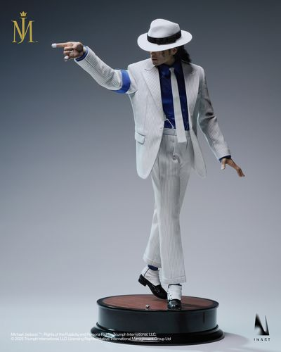

Figura de Michael Jackson Coleccionable
Las figuras de acción de Michael Jackson, comúnmente basadas en sus eras icónicas como Smooth Criminal, Thriller o Billie Jean, son piezas altamente articuladas. Cuentan con múltiples accesorios, rostros intercambiables y ropa de tela detallada. Están diseñadas para recrear sus pasos de baile más famosos.
Diseño y Vestuario: Réplicas exactas de sus atuendos más famosos. Incluye el traje de gánster blanco con sombrero fedora (Smooth Criminal) o la clásica chaqueta roja con cierres (Thriller). Articulación: Cuentan con múltiples puntos de articulación (hombros, codos, torso y piernas). Esto permite recrear su postura antigravedad clásica o el Moonwalk. Materiales: Fabricadas principalmente en PVC de alta calidad y plástico ABS. Accesorios: Incluyen micrófonos en miniatura, manos intercambiables, bases de soporte y sombras decorativas para los pies. Tamaños estándar: Varían desde los 11 cm (estilo chibi o set miniatura) hasta figuras hyper-realistas a escala 1/6 que miden unos 30 cm.